2 Autres crustacés
Les crustacés font partie du phylum des Arthropoda, ce sont des organismes soit terrestres, dulcicoles ou marins. L’anatomie générale d’un crustacé est divisée en 3 parties : tête, thorax et abdomen. Cette classe contient plus de 42 000 espèces dont certaines sont planctoniques soit toute leur vie comme le krill soit à un stade du cycle comme les nauplii (Ruppert, Fox, et Barnes 2004).
A l’instar des cnidaires, la phylogénie des crustacés a été et est encore soumise à de nombreux débats. Une phylogénie retenue est celle se basant sur l’étude de Schwentner et al. (2017) , une des plus récentes.
2.1 Nauplii
Les Nauplii sont les stades larvaires les plus basiques des crustacés à l’exception de la majorité des Malacostraca (Dahms, Fornshell, et Fornshell 2006). L’anatomie d’une larve nauplii est divisée en 2 parties (Ruppert, Fox, et Barnes 2004) :
tête : constituée de 3 segments comportant 2 paires d’antennes et les mandibules (utilisées ici pour la locomotion) ainsi que d’un œil nauplien.
Région postérieure : constituée des ébauches du céphalon, thorax et abdomen.
Les organismes dont le stade nauplii est important sont : Cephalocarida, Branchiopoda, Ostracoda, Mystacocarida, Copepoda, Cirripedia, Ascothoracida, Rhizocephala, Facetotecta, Euphausiacea et Penaeidea (Dahms, Fornshell, et Fornshell 2006).
La Figure 2.1 propose une série de vignettes de nauplii.
plot_vignettes(vigns, group = "crustacea_nauplius", nx = 5, ny = 5)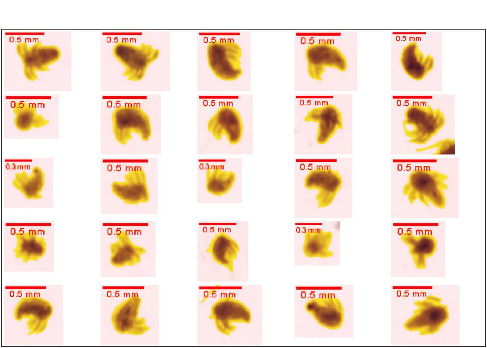
Il serait intéressant de pouvoir identifier les différentes nauplii pour affiner la précision du classifieur. Malheureusement, la morphologie de ces larves est extrêmement similaire pour la plupart des taxons et de ce fait l’identification est difficile à établir.
Néanmoins, les nauplii de copépodes (Figure 2.2) et d’euphausiacées (Figure 2.3 ) sont reconnaissables des autres. Ces deux larves de nauplii peuvent se distinguer par la forme du telson et la proportion entre les 2 paires d’antennes (Dahms, Fornshell, et Fornshell 2006).
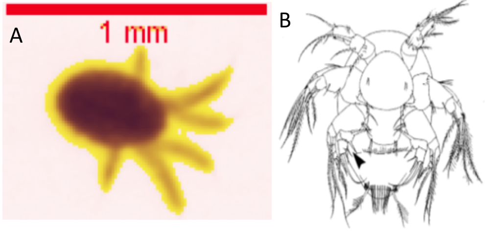
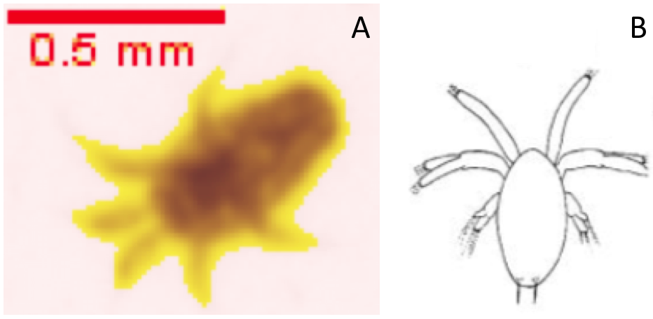
La Figure 2.4 propose une série de vignettes de nauplii de copépodes.
plot_vignettes(vigns, group = "copepoda_nauplius_larva", nx = 5, ny = 4)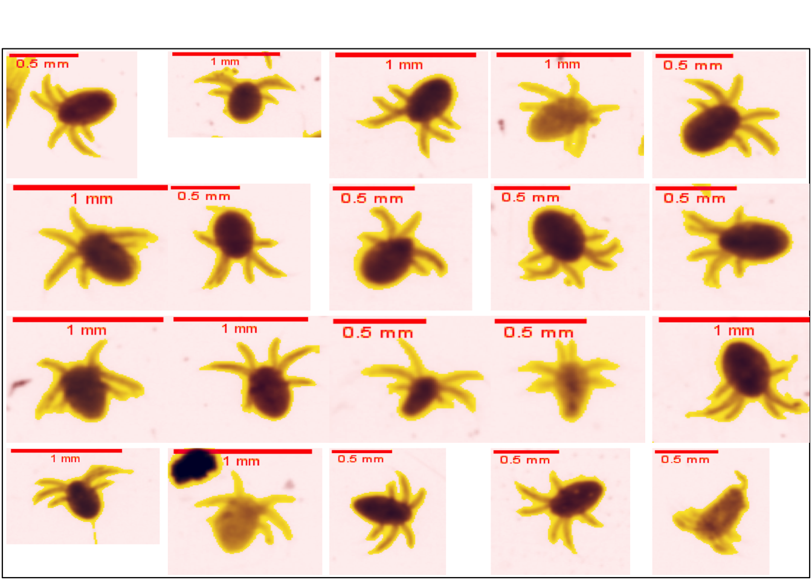
La Figure 2.5 propose une série de vignettes de nauplii d’euphausiacées.
plot_vignettes(vigns, group = "euphausiacea_nauplius", nx = 5, ny = 4)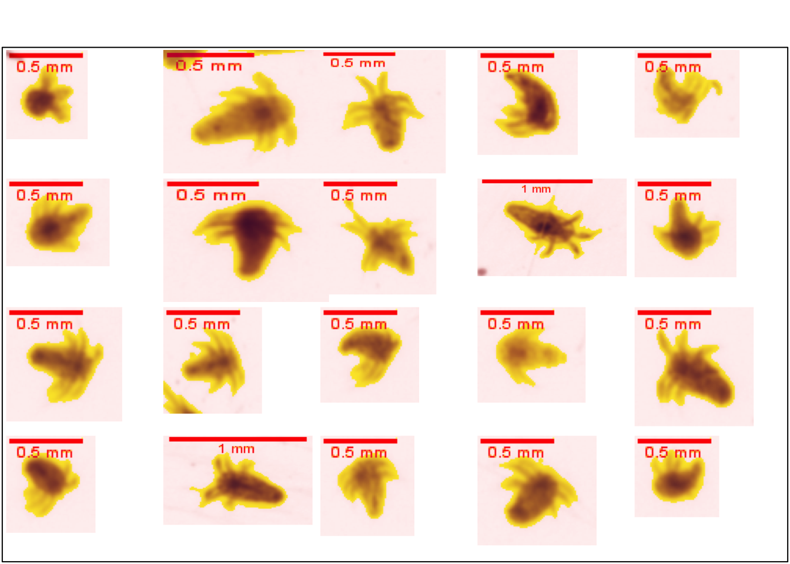
2.2 Cladocera
Les cladocères sont un super-ordre de Branchiopoda contenant 11 familles différentes (Ruppert, Fox, et Barnes 2004). La morphologie de ces organismes est tout à fait caractéristique par la présence d’une grande épine et d’un œil composé bien visible sur les vignettes (Quivy, Thomas 2018). L’épine se trouve sur la carapace, elle-même divisée en deux comme un bivalve (Ruppert, Fox, et Barnes 2004).
Les Cladocera sont souvent divisés en 4 ordres (Ruppert, Fox, et Barnes 2004) :
Anomopoda : Bosminidae, Chydoridae, Daphniidae, Macrothricidae et Moinidae
Ctenopoda : Holopediidae et Sididae
Onychopoda : Cercopagidae, Podonidae et Polyphemidae
Haplopoda : Leptodoridae
Après analyse des vignettes disponibles lié à l’étude de Dugauquier (2019) , il s’avère que seul des Onychopoda sont trouvé.
2.2.1 Onychopoda
Les travaux associés (Dugauquier 2019) à ce guide font référence au groupe des Anamopoda alors qu’il s’agit plus vraisemblablement d’individus du genre Evadne. Le genre Evadne appartient à l’ordre des Onychopoda.
Les anamopoda sont des organismes majoritairement d’eau douce, mais on les retrouve parfois dans des zones côtières avec fort apport d’eau douce.
La Figure 2.6 propose une série de vignettes d’Onychopoda.
On retrouve les éléments suivant sur les vignettes
un œil composé plus dense
une carapace claire
des pattes dépassants de la carapace
plot_vignettes(vigns, group = "cladocera", ny = 5, nx=5)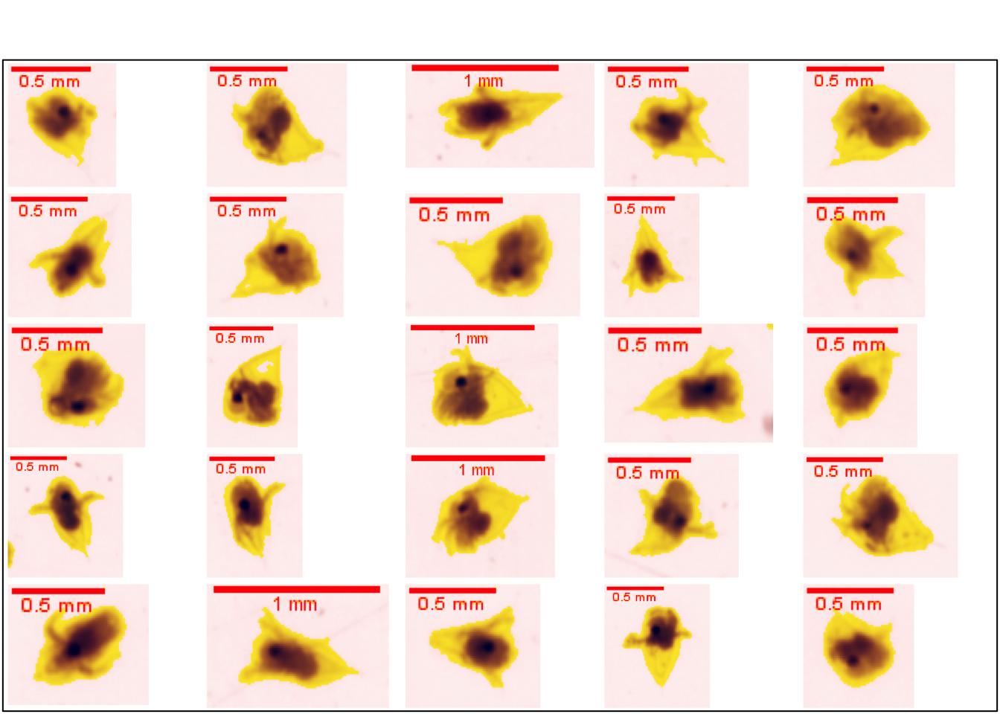
2.3 Malacostraca
La classe des Malacostraca contient plus de la moitié des espèces connues de crustacés, il est donc plus qu’indispensable de s’y attarder. Ils sont reconnaissables par le tronc divisé en 14 segments plus un telson. Les 8 premiers segments forment le thorax et les 6 derniers l’abdomen (Ruppert, Fox, et Barnes 2004).
Parmi cette classe, les ordres suivant sont analysés : Decapoda, Amphipoda, Isopoda, Euphausiacea et Stomatopoda.
2.3.1 Decapoda - Zoea
Les Zoea sont, comme les Nauplii, un stade larvaire de crustacés, mais cette fois-ci limité au Malacostraca et plus particulièrement au Decapoda (Ruppert, Fox, et Barnes 2004). Les larves de Decapoda sont nommées zoea lorsqu’elles acquièrent les appendices thoraciques utilisés pour la nage de l’organisme (Figure 2.7). C’est le stade larvaire le plus basique des décapodes sauf pour les Dendrobranchiata dont un stade Nauplii le précède (Haug et al. 2016).
Les décapodes se divisent en 2 sous-ordres, Dendrobrachiata et Pleocyemata. Ces 2 sous-ordres se différencient par leurs branchies. Les Dendrobrachiata ont des branchies constituées d’un axe ramifié complexe et les Pleocyemata ont des branchies avec des lamelles simples (Anger 2006). Les larves rencontrées dans les vignettes font toutes partie des Pleocyemata et plus particulièrement des Brachyura et Anomura.
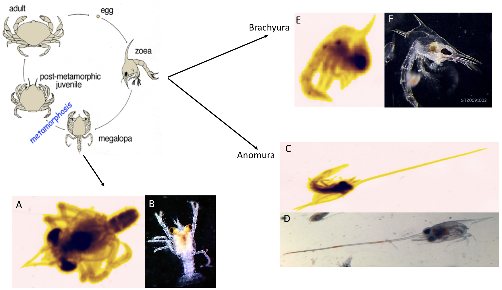
La Figure 2.8 propose une série de vignettes de Brachyura.
plot_vignettes(vigns, group = "brachyura_zoea_larva")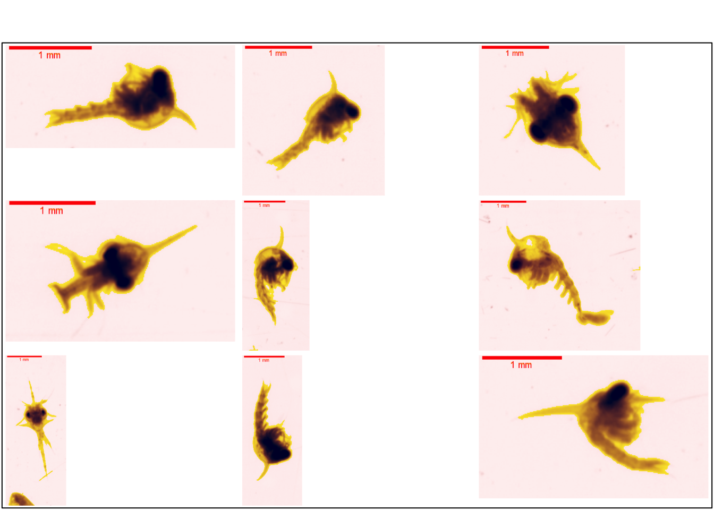
La Figure 2.8 propose une série de vignettes de Anomura.
plot_vignettes(vigns, group = "anomura_zoea_larva")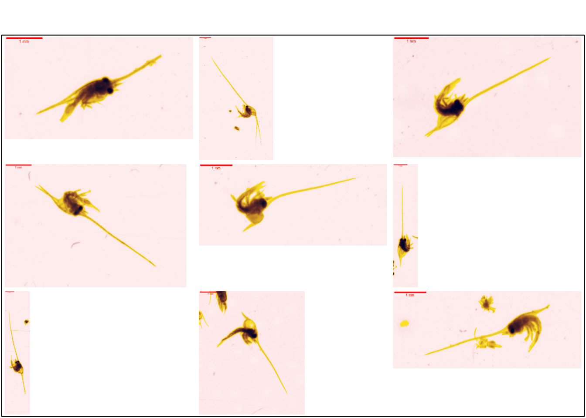
2.3.2 Decapoda - Megalopa
A l’instar des 2 classes précédentes, les Megalopa sont un stade larvaire qui, comme les Zoea, se trouve chez les Decapoda. Il s’agit d’un stade plus avancé des Anomura et Brachyura (Smith et Jensen 2015). Ce stade se caractérise par des appendices plus fonctionnels, les pléopodes (Taylor, Hoppenrath, et Saldarriaga 2008). A ce stade il n’est malheureusement pas possible de différencier les Anomura et les Brachyura (Figure 2.7).
La Figure 2.10 propose une série de vignettes de Megalopa.
plot_vignettes(vigns, group = "decapoda_megalopa_larva", nx = 4, ny = 4)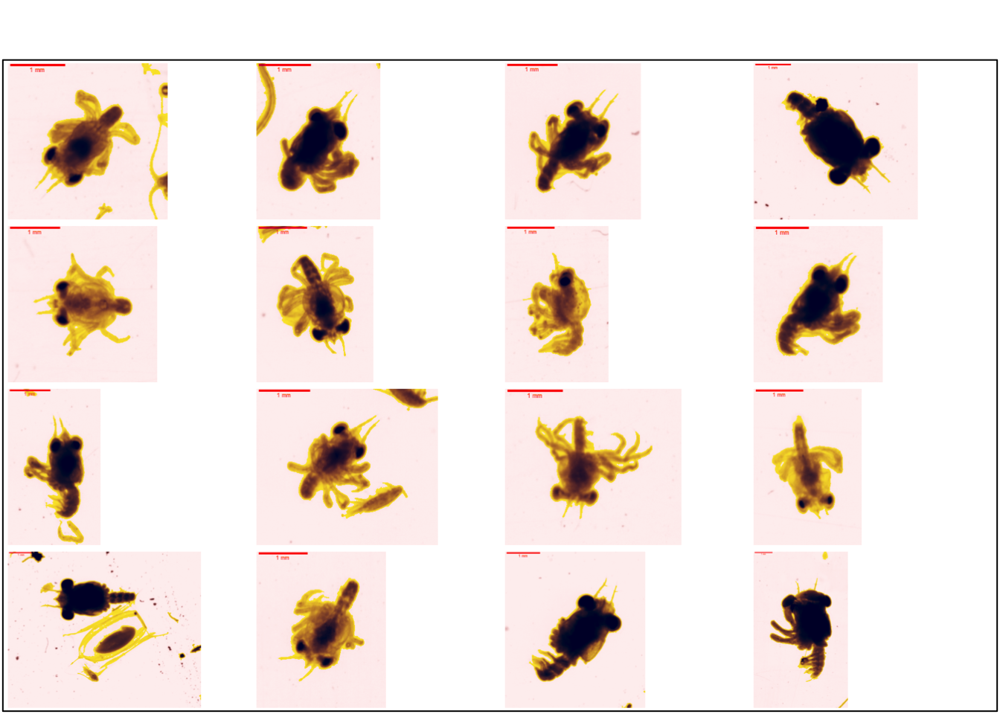
2.4 Stomatopoda
Cet ordre fait partie des Malacostraca et est constitué de plus de 300 espèces. Les Stomatopoda sont connus principalement car ils contiennent les crevettes mantes, prédatrices de poissons, mollusques et autres crustacés (Ruppert, Fox, et Barnes 2004). Dans le cadre de ce guide, ce sont les larves de stomatopodes qui sont analysées. Déjà au stade larvaire, les stomatopodes sont des prédateurs de crustacés très important et contrairement à beaucoup d’autres malacostracés larvaires, ils sont déjà planctoniques (Haug et al. 2018).
Chez les Stomatopoda il y a 4 types de stades larvaires identifiables par leurs morphologie [@Haug2016].
Deux stades primaires :
- Antizoea
- Pseudozoea
Deux stades secondaires, se distinguant par le nombre de denticules sur le telson :
- Erichthus : maximum 3 denticules sur le telson
- Alima : minimum 4 denticules sur le telson
La Figure 2.11 propose une série de vignettes de Stomatopoda. Différents stades sont présents dans ces vignettes.
plot_vignettes(vigns, group = "stomatopoda", nx = 4, ny = 4)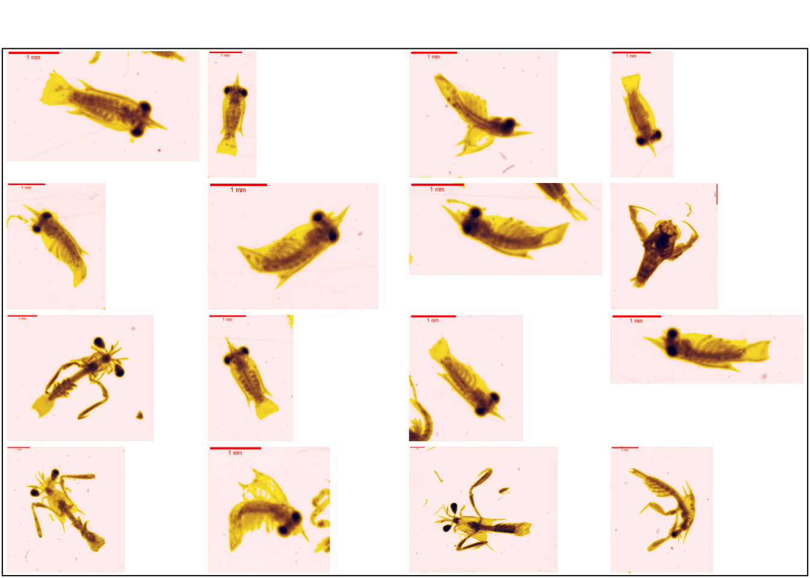
L’étude de Haug et al. (2016) révèle également quelques nouveaux stades larvaires (balloon-larva, spiny-balloon, flying-saucer, gnome-hat) mais ils restent encore assez hypothétiques. Une étude plus récente révèle également un stade larvaire dit « extrême » et un autre dit spiked helmet (Haug et al. 2018). Pour cette étude seuls les 4 stades classiques sont donc pris en compte, sur ces 4 stades, le stade Erichthus n’a pas été identifié dans les vignettes.
2.4.1 Antizoea
Les yeux ne sont pas encore fonctionnels, les antennules uniflagellées et les pattes thoraciques biramées. Le stade antizoea donnera une larve erichthus Figure 2.12.
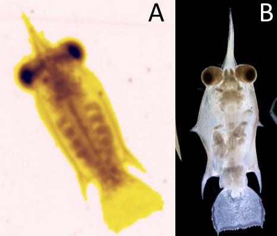
2.4.2 Pseudozoea
Les yeux sont fonctionnels, les antennules biflagellées. Le stade pseudozoea donnera une larve erichthus ou alima (Figure 2.13).
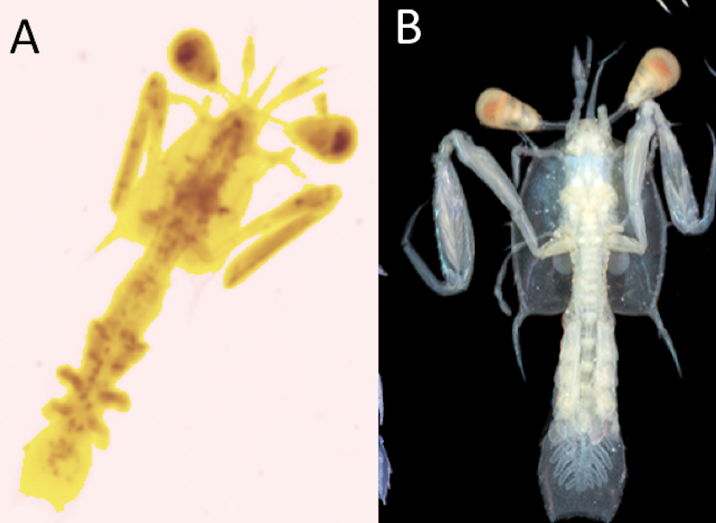
2.4.3 Alima
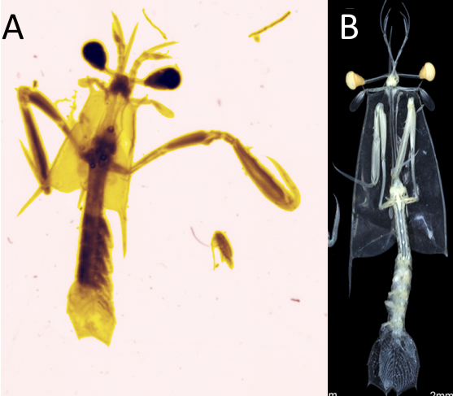
2.5 Euphausiacea
Cet ordre fait également partie des Malacostraca et les organismes qui le composent font partie de ce que l’on appelle communément le krill. Ce sont des crustacés pélagiques de maximum 3 cm qui sont parfois considérés comme étant des décapodes primitifs (Ruppert, Fox, et Barnes 2004). Ces organismes ont un cycle de vie divisé en plusieurs stades et seuls ceux allant du calyptopis à l’adulte sont considérés dans cette classe, les précédents étant inclus dans les nauplii représenté sur la Figure 2.15 . Le cycle de vie dure généralement 2 à 3 mois et les œufs sont lâchés au printemps (Guglielmo, Granata, et Guglielmo 2015)
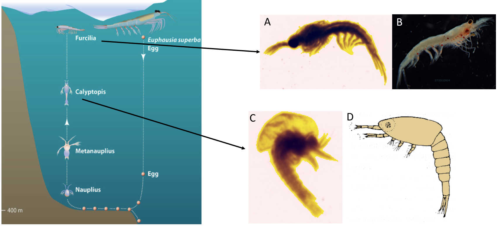
Les vignettes d’euphausiacea sont classées en fonction des 3 stades suivants : nauplii (Section 2.1), calyptopis et le groupe furcilia-adulte.
Distinguer plus précisément les différents euphausiacés est extrêmement compliqué, en effet plusieurs études ont démontré que la morphologie est fort variable pour les stades larvaires au sein d’une même espèce. Certains facteurs environnementaux semblent affecter de manière importante la morphologie des individus larvaires au sein même d’une même espèce, on cite notamment la température, la salinité, la disponibilité en nourriture,… (Le Roux 1973).
2.5.1 Calyptopis
Il y a communément 3 stades de calyptopis au cours desquels l’abdomen se segmentera pour arriver à 6 segments se terminant par le telson. Les yeux se développent également mais sont toujours recouverts par une carapace (Guglielmo, Granata, et Guglielmo 2015).
La Figure 2.16 propose une série de vignettes de calyptopis.
plot_vignettes(vigns, group = "euphausiacea_calyptopis_larva", nx = 4, ny = 4)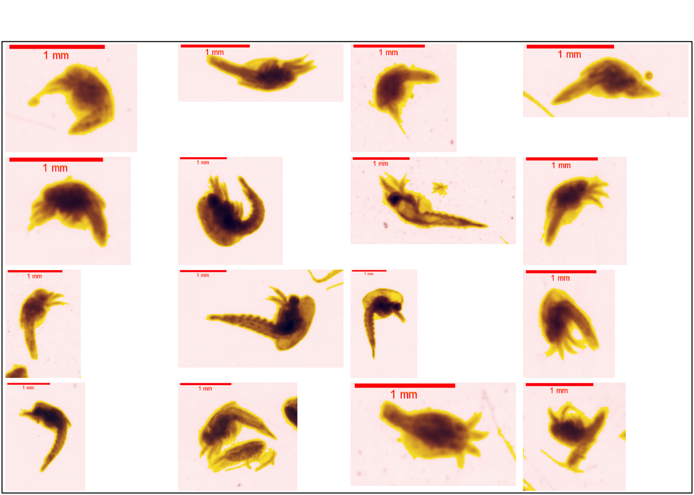
2.5.2 Furcilia
Ce stade suit les calyptopis. Ce sont des adultes miniatures. Les yeux sortent de la carapace. Au cours des stades furcilia, les pléopodes vont se développer. Il est souvent difficile de distinguer les furcilia avancées et les adultes de part la grande variabilité morphologique des individus. Ils sont donc tous rassemblés dans la même classe.
La Figure 2.17 propose une série de vignettes de furcilia.
plot_vignettes(vigns, group = "euphausiacea_furcilia_larva", nx = 4, ny = 4)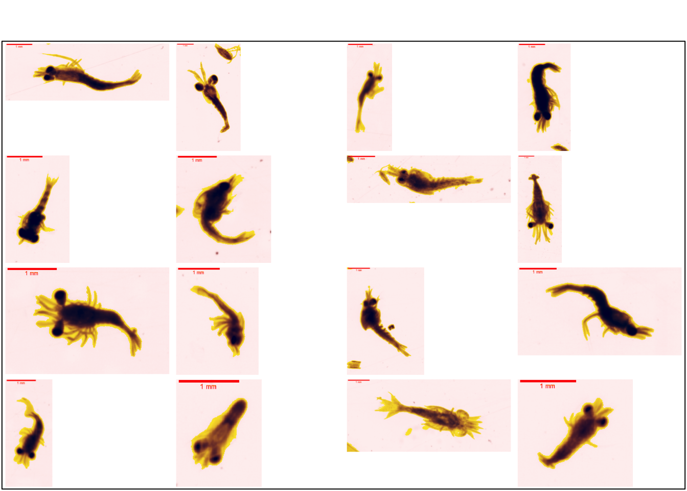
2.6 Amphipoda
Les amphipodes sont un ordre de Malacostraca constitué de plus de 6000 espèces. C’est un taxon très diversifié (terrestre, marin et dulciquole) mais également très primitif. Ils ont des rôles extrêmement importants dans beaucoup d’écosystèmes (Ruppert, Fox, et Barnes 2004). Par exemple, les gammares sont notamment très connus comme bioindicateurs de polluants (Macneil, Dick, et Elwood 2007).
Quatres familles du sous-ordre des Hyperiidea sont distinguables parmi les vignettes selon les critères d’identifications de Hecq, Collignon, et Goffart (2014) :
Oxycephalidae
Phronimidae
Platyscelidae
Vibiliidae
2.6.1 Oxycephalidae
Les Oxyphalidae ressemblent fortement aux Vibiliidae mais la tête est dirigée vers l’intérieur du corps (Figure 2.18) .
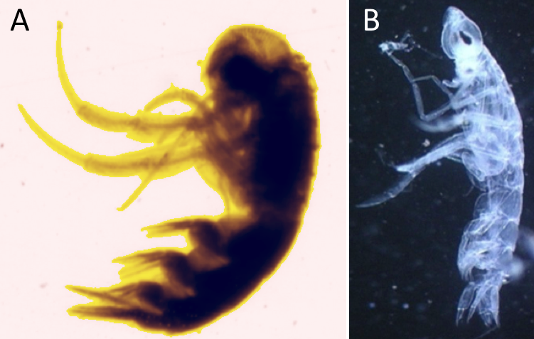
La Figure 2.19 propose une série de vignettes d’Oxycephalidae.
plot_vignettes(vigns, group = "oxycephalidae", nx = 4, ny = 4)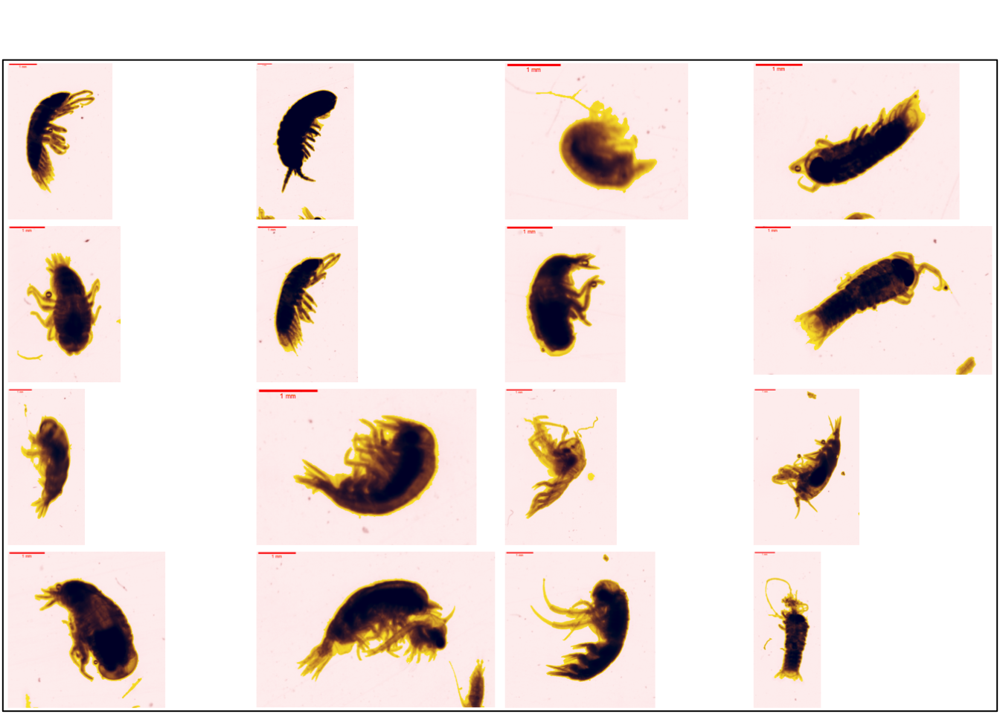
2.6.2 Phronimidae
Les Phronimidae possèdent de grands peréiopodes ainsi qu’une tête conique dirigée vers le bas Figure 2.20 .
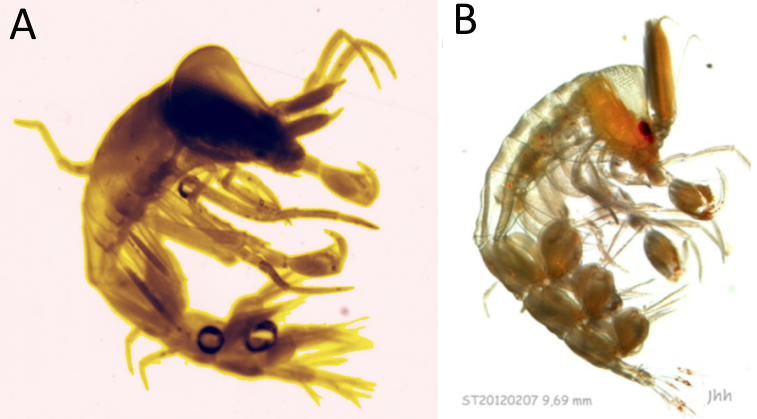
La Figure 2.21 propose une série de vignettes de Phronimidae.
plot_vignettes(vigns, group = "phronimidae", nx = 2, ny = 2)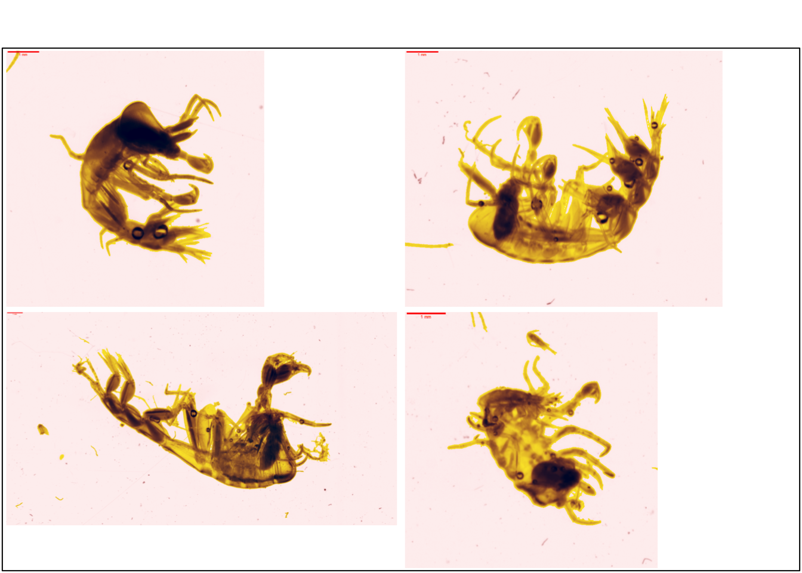
2.6.3 Platyscelidae
Les Platyscelidae sont facilement reconnaissable par la forme des yeux globuleux (Figure 2.22).
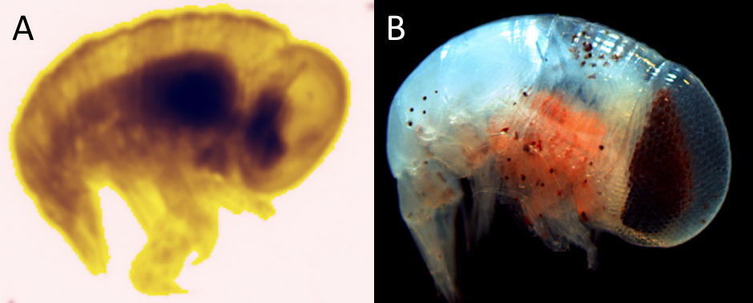
La Figure 2.23 propose une série de vignettes de Platyscelidae.
plot_vignettes(vigns, group = "platyscelidae", nx = 2, ny = 2)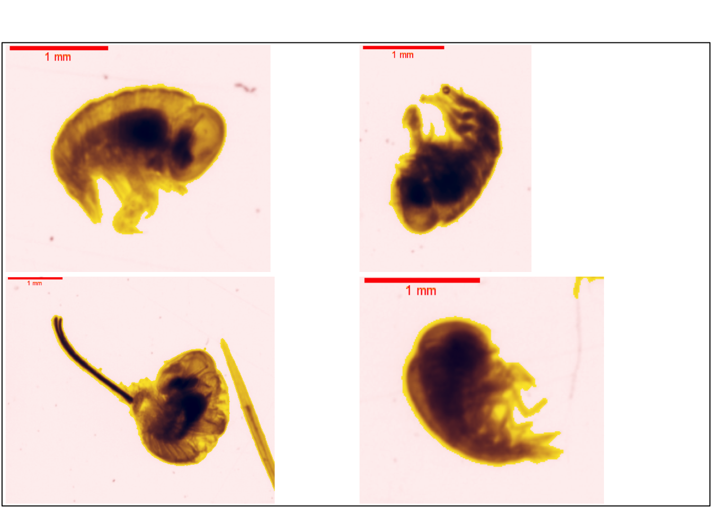
2.6.4 Vibiliidae
Les Vibiliidae possèdent des antennes droites et une tête petite et dégagées du corps (Figure 2.24).
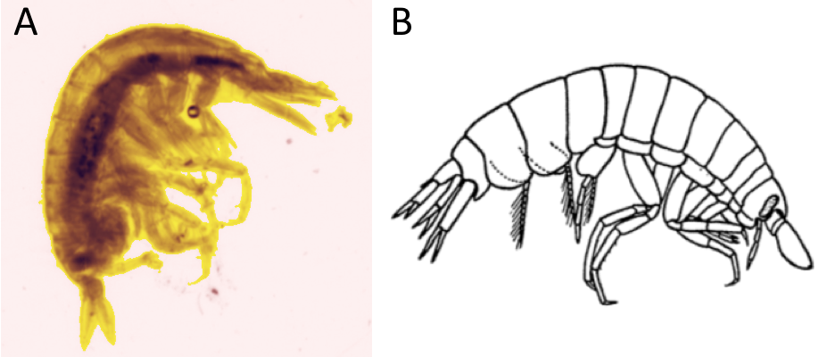
La Figure 2.25 propose une série de vignettes de Vibiliidae.
plot_vignettes(vigns, group = "vibiliidae", nx = 2, ny = 2)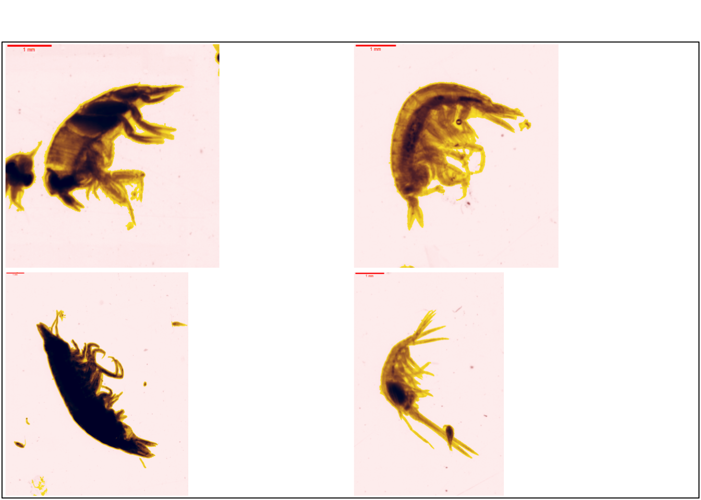
2.7 Isopoda
Tout comme les amphipodes, les isopodes sont un ordre de Malacostraca très diversifié d’un point de vue habitat, ils sont tout aussi bien terrestres qu’aquatiques (Figure 2.26). Ce sont des organismes très importants dans les habitats benthiques. Cet ordre contient également un grand nombre d’espèces parasites et ce sont les seuls crustacés dont le cycle de vie peut être indépendant du milieu aquatique (Ruppert, Fox, et Barnes 2004).
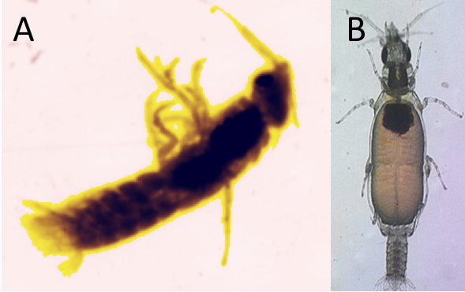
La Figure 2.27 propose une série de vignettes d’Isopoda.
plot_vignettes(vigns, group = "isopoda", nx = 2, ny = 2)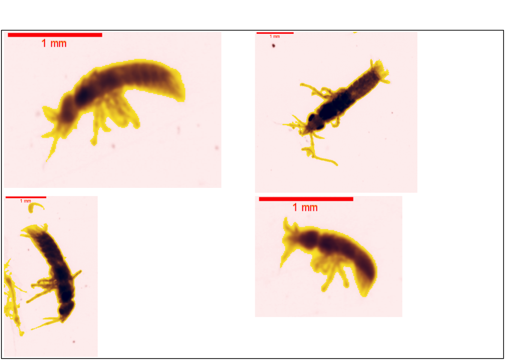